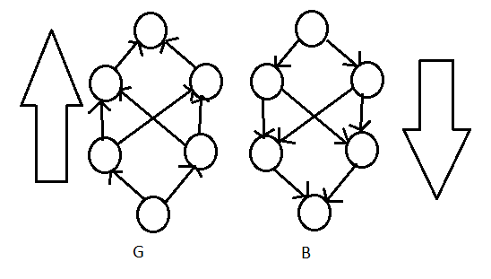

Introduction
The most common algorithm for training neural networks is backpropagation.
This approach uses the chain rule to compute the gradient
$\nabla_x f(x,y)$ where $x$ is a set of variables that we want the gradient for, with respect to
$f(x,y)$, and $y$ is another set of variables that parametrise the function but we don't need
derivatives for (i.e. they are inputs).
In general in machine learning, the gradient we are looking for is $\nabla_\theta \mathcal{J}(\theta)$,
i.e. the gradient of the cost function with respect the the parameters $\theta$.
For neural networks this is the partial derivative of the cost $\mathcal{J}$ with respect to the
weights and biases, $W^{l}_{ji}$ and $b^{l}_{j}$ respectively, in the network, i.e.
$\partial \mathcal{J} / \partial W^{l}_{ji}$ and $\partial \mathcal{J} / \partial b^{l}_{j}$.
The parameters are then adjusted as required to minimise the cost $\mathcal{J}$.
As the cost surface is likely to be non-convex, there is no guarantee that a global minimum will be
reached, and therefore optimisation heuristics based on gradient descent are often used instead.
Explicit Backpropagation via Recursive Chain Rule Applications
Backpropagation is not restricted to the case of neural network parameter optimisation, but rather
is a general approach for computing the derivative of a function.
One way of understanding this is to consider a function as a computational graph.
Nodes in the graph represent variables, which can be scalars, vectors, matrices, tensors, etc.
Edges are directed and indicate operations on variables, with an edge from node $i$ to node $j$
indicating that the operation that computes $j$ takes $i$ as an input.
Operations can have arbitrary numbers of inputs and outputs, but here are restricted to single
variable outputs as variables can be multi-entry (e.g. vectors), and so no generality is lost.
All nodes, except input nodes, are therefore associated with an operation that computes the value
of the variable the node represents.
For node $i$, this operation can be represented as $f_i(\operatorname{parents}(i))$, i.e. the operator
$f$ associated with node $i$ applied to $i$'s parents, where the parents of
a node $i$ are all nodes $j$ such that there is an edge $j \to i$ in the graph.
The children $\operatorname{children}(i)$ of $i$ can be defined similarly to be all nodes $j$ such that
there is an edge $i \to j$ in the graph.
Some examples of computational graphs can be seen below.

Consider the graph of the computation of a scalar variable $v_n$.
We want to obtain the gradient of this scalar with respect to the $m$ input variables to the function,
$v_1 \ldots v_m$ with $m \lt n$, i.e. $\partial v_n / \partial v_i$ for all $i \in {1, 2, \ldots, m}$.
In the case of backpropagation applied to neural networks, $v_1 \ldots v_m$ would be the parameters
of the model and $v_n$ the cost associated with an example or minibatch.
Simply by index reordering, we can assume that the nodes in the graph are a partial ordering such that
if $i \le j$ then $v_i \le v_j$, i.e. $v_i$ can be computed before $v_j$.
In this manner the nodes can be computed one after the other starting with $v_{m+1}$ and ending with
$v_n$.
Given the graph $\mathcal{G}$ of the computation of $v_n$, we can construct another computational graph
$\mathcal{B}$ with one node for each node in $\mathcal{G}$, but with the computation proceeding in
the opposite direction.
Where $\mathcal{G}$ represents the forward computation of $v_n$, $\mathcal{B}$ represents the backwards
computation of the derivative $\partial v_n / \partial v_i$ associated with each node $v_i$ in
$\mathcal{G}$.
This is done using recursive applications of the chain rule with respect to $v_n$:
$$
\frac{\partial v_n}{\partial v_j} =
\sum_{i \in \operatorname{children}(v_j)}
\frac{\partial v_n}{\partial v_i}
\frac{\partial v_i}{\partial v_j}
$$
In this context, backpropagation consists of performing a multiplication of a Jacobian matrix
(containing the $\partial v_i / \partial v_j$ terms) by a gradient (the $\partial v_n / \partial v_i$
terms) for each operation in the graph.
An example of constructing $\mathcal{B}$ from $\mathcal{G}$ can be seen below.

Symbol-to-Symbol Differentiation
Rather than duplicating the structure of the computational graph $\mathcal{G}$ when we construct
$\mathcal{B}$, we can instead augment $\mathcal{G}$ with new nodes representing the derivatives we
are interested in.
In this symbol-to-symbol approach the backpropagation algorithm does not need to access any numeric
values.
Rather it describes how to compute the derivatives through its augmentation of $\mathcal{G}$.
Later, derivatives for specific numeric values can be computed using a (graph) evaluation engine.
Because derivatives are described in the same language as the original computation, it is also possible
to run backpropagation again to compute higher order derivatives.
An example of this augmentation can be seen below.

General Backpropagation
To compute the gradient of a scalar $z$ with respect to one of its ancestor variables $x$ in a
computational graph, first observe that $\frac{dz}{dz} = 1$.
Next, we can compute the gradient of $z$ with respect to each parent of $z$ in the graph by multiplying
the current gradient (i.e. $\frac{dz}{dz} = 1$) by the Jacobian matrix of the operation that
produced $z$.
We can continue travelling backwards through the graph by multiplying the gradient by Jacobian matrices
until we reach $x$.
For any node $n$ between $z$ and $x$ that is reachable by two or more paths, we simply sum the gradients
arriving at $n$ from the different paths.
For maximum generality, assume that each variable in the computational graph $\mathcal{G}$ is a tensor
$\mathsf{V}$.
Each variable $\mathsf{V}$ is also assumed to have three methods associated with it:
-
$\operatorname{get\_op}()$ - to get the operation that computes $\mathsf{V}$.
-
$\operatorname{get\_children}(\mathcal{G})$ - to get the children of $\mathsf{V}$ in
$\mathcal{G}$, i.e. those variables $\mathsf{X}$ such that there is an edge
$\mathsf{V} \to \mathsf{X}$ in $\mathcal{G}$.
-
$\operatorname{get\_parents}(\mathcal{G})$ - to get the parents of $\mathsf{V}$ in
$\mathcal{G}$, i.e. those variables $\mathsf{X}$ such that there is an edge
$\mathsf{X} \to \mathsf{V}$ in $\mathcal{G}$.
Each operation $\operatorname{op}$ is also assumed to have an associated $\operatorname{backprop}$
method that computes the product of a Jacobian matrix and a vector using
$$
\begin{align}
\nabla_{\mathsf{X}} z
& = \sum_j \nabla_{\mathsf{X}} \mathsf{Y}_j \frac{\partial z}{\partial \mathsf{Y}_j} \\
& = \mathbf{J}_{\operatorname{op}}^{\mathsf{T}} \nabla_{\mathsf{Y}} z
\end{align}
$$
specifically via the summation equation in order to simplify calculations.
Each operation is therefore responsible for knowing how to backpropagate itself, thereby removing the
need for the backpropagation algorithm to known any rules and making the whole process more easily
extensible.
For example, assume that somewhere in $\mathcal{G}$ we have a node $\mathsf{C}$ that is computed
by multiplying two nodes $\mathsf{A}$ and $\mathsf{B}$, i.e $\mathsf{C} = \mathsf{A} \times \mathsf{B}$.
If we assume that the derivative of the scalar output $z$ with respect to $\mathsf{C}$ is $\mathsf{G}$,
then the $\operatorname{backprop}$ method of the multiplication operation must know to return
$\mathsf{B}\mathsf{G}$ if the gradient with respect to $\mathsf{A}$ is requested and
$\mathsf{A}\mathsf{G}$ if the gradient with respect to $\mathsf{B}$ is requested.
More formally, $\operatorname{op}.\operatorname{backprop}(\mathsf{Inp}, \mathsf{X}, \mathsf{G})$ must
compute
$$
\sum_i
(\nabla_{\mathsf{X}} \operatorname{op.f}(\mathsf{Inp})_i)
\mathsf{G}_i
$$
with $\operatorname{op.f}$ the operation in question, $\mathsf{Inp}$ the inputs to
$\operatorname{op.f}$, $\mathsf{X} \in \mathsf{Inp}$ the input variable that the gradient is to be
computed with respect to and $\mathsf{G}$ the gradient at the output of the operation
(propagated back from nodes further in the computational graph).
This is simply an implementation of the chain rule and follows from
$$
\nabla_{\mathsf{X}} z =
\sum_j \nabla_{\mathsf{X}} \mathsf{Y}_j \frac{\partial z}{\partial \mathsf{Y}_j}
$$
with $\frac{\partial z}{\partial \mathsf{Y}_j} = \mathsf{G}_i$ as the gradient at the output of the
operation and
$\nabla_{\mathsf{X}} \mathsf{Y}_j = \nabla_{\mathsf{X}} \operatorname{op.f}(\mathsf{Inp})_i$ being
the derivative of the output of the operation with resect to the input you are interested in.
This approach therefore considers each element $i$ of the output tensor
$\operatorname{op.f}(\mathsf{Inp})$ in turn.
For each element, the gradient of the target variable $\mathsf{X}$ with respect to it
($\nabla_{\mathsf{X}} \operatorname{op.f}(\mathsf{Inp})_i$) is multiplied by the gradient of the
output scalar $z$ with respect to it ($\mathsf{G}_i$).
These individual gradients for each element of the output variable are summed to get the gradient of the
output scalar $z$ with respect to the input variable $\mathsf{X}$.
The $\operatorname{op}.\operatorname{backprop}$ method should treat all inputs to $\operatorname{op.f}$
as if they were unique, even if they aren't.
For example, if the multiplication operation is used to calculate $\mathsf{X}^2$, then the two input
nodes will both be $\mathsf{X}$.
Even though both inputs will have the same value (and are the same variable) the derivative with respect
to any one of the nodes is $\mathsf{X}\mathsf{G}$, with $\mathsf{G}$ being the gradient at the output
of the operation.
If a gradient of one of $\mathsf{X}$'s ancestral nodes is needed, then the two $\mathsf{X}\mathsf{G}$
derivatives can be summed together to give $2\mathsf{X}\mathsf{G}$ as required.
An algorithm for backpropagation in a general computational graph can be seen below.
The algorithm begins by determining the subset $\mathcal{G}'$ of the computational graph $\mathcal{G}$
that contains nodes that are both descendants of the scalar to compute the derivative of and the
variables to compute the derivative with respect to.
This prevents the gradient with respect to variable $\mathsf{V}$ from being calculated by summing over
gradients at variables that are not along the path between $\mathsf{V}$ and the scalar, i.e. only those
variables between $\mathsf{V}$ and the scalar are considered when calculating the gradient at
$\mathsf{V}$.
For each variable, the derivative is then calculated by backpropagating and summing over the
derivatives of the variable's children that are along a path between it and the target scalar.

Intuition for Neural Network Backpropagation
Given a neural network, making a small change $\Delta W^{l}_{ji}$ to the weight of edge $W^{l}_{ji}$
will result in a corresponding change in the output $\mathbf{h}^{l}_{j}$ of the target neuron of the
edge.
Assuming a fully connected network, this change will affect all outputs $\mathbf{h}^{l+1}$ of the
neurons in the next layer.
This repeats as the change propagates through the network until it reaches the output $\mathbf{h}^L$ of
the neurons in the output layer of the network, and consequently causes a change in the cost
$\mathcal{J}$.
Ignoring biases, the changes can be related through
$\Delta \mathcal{J} \approx \frac{\partial \mathcal{J}}{\partial W^{l}_{ji}} \Delta W^{l}_{ji}$, i.e.
the change in the cost is approximately equal to the change in the cost with respect to a change in
the weight multiplied by the actual change in the weight's value.
One way to calculate $\partial \mathcal{J} / \partial W^{l}_{ji}$ is to follow the small perturbations
caused by $\Delta W^{l}_{ji}$ until we reach $\mathcal{J}$.
Concentrating on one neuron in each layer and ignoring biases, $\Delta W^{l}_{ji}$ causes a change
$\Delta \mathbf{h}^{l}_{j}$ in the output of the $j$th neuron in the $l$th layer.
This change is given by:
$$
\Delta \mathbf{h}^{l}_{j} \approx
\frac{\partial \mathbf{h}^{l}_{j}}{\partial W^{l}_{ji}}
\Delta W^{l}_{ji}
$$
Taking one neuron in layer $l+1$ affected by this change in $\mathbf{h}^{l}_{j}$ gives:
$$
\begin{align}
\Delta \mathbf{h}^{l+1}_{k} & \approx
\frac{\partial \mathbf{h}^{l+1}_{k}}{\partial \mathbf{h}^{l}_{j}}
\Delta \mathbf{h}^{l}_{j}
\\
\Delta \mathbf{h}^{l+1}_{k} & \approx
\frac{\partial \mathbf{h}^{l+1}_{k}}{\partial \mathbf{h}^{l}_{j}}
\frac{\partial \mathbf{h}^{l}_{j}}{\partial W^{l}_{ji}}
\Delta W^{l}_{ji}
\end{align}
$$
Propagating this to the output of the network gives:
$$
\Delta \mathcal{J} \approx
\frac{\partial \mathcal{J}}{\partial \mathbf{h}^{L}_{z}}
\frac{\partial \mathbf{h}^{L}_{z}}{\partial \mathbf{h}^{L-1}_{y}}
\frac{\partial \mathbf{h}^{L-1}_{y}}{\partial \mathbf{h}^{L-2}_{x}}
\ldots
\frac{\partial \mathbf{h}^{l+1}_{k}}{\partial \mathbf{h}^{l}_{j}}
\frac{\partial \mathbf{h}^{l}_{j}}{\partial W^{l}_{ji}}
\Delta W^{l}_{ji}
$$
In order to get the entire change in the cost $\mathcal{J}$ caused by the change $\Delta W^{l}_{ji}$ it
is necessary to sum over all paths from $W^{l}_{ji}$ to $\mathcal{J}$ as:
$$
\Delta \mathcal{J} \approx
\sum_{zyx..k}
\frac{\partial \mathcal{J}}{\partial \mathbf{h}^{L}_{z}}
\frac{\partial \mathbf{h}^{L}_{z}}{\partial \mathbf{h}^{L-1}_{y}}
\frac{\partial \mathbf{h}^{L-1}_{y}}{\partial \mathbf{h}^{L-2}_{x}}
\ldots
\frac{\partial \mathbf{h}^{l+1}_{k}}{\partial \mathbf{h}^{l}_{j}}
\frac{\partial \mathbf{h}^{l}_{j}}{\partial W^{l}_{ji}}
\Delta W^{l}_{ji}
$$
Substituting this into
$\Delta \mathcal{J} \approx \frac{\partial \mathcal{J}}{\partial W^{l}_{ji}} \Delta W^{l}_{ji}$ gives:
$$
\frac{\partial \mathcal{J}}{\partial W^{l}_{ji}} \approx
\sum_{zyx..k}
\frac{\partial \mathcal{J}}{\partial \mathbf{h}^{L}_{z}}
\frac{\partial \mathbf{h}^{L}_{z}}{\partial \mathbf{h}^{L-1}_{y}}
\frac{\partial \mathbf{h}^{L-1}_{y}}{\partial \mathbf{h}^{L-2}_{x}}
\ldots
\frac{\partial \mathbf{h}^{l+1}_{k}}{\partial \mathbf{h}^{l}_{j}}
\frac{\partial \mathbf{h}^{l}_{j}}{\partial W^{l}_{ji}}
$$
What this tells us is that each edge in the network is associated with a rate, which is just
the partial derivative of the target neuron's output with respect to the source neuron's output, i.e.
$\partial \mathbf{h}^{l+1}_{j} / \partial \mathbf{h}^{l}_{i}$.
The rate along a path between neurons is then just the product of the rates of the edges that make up
the path, and the total rate between two neurons in the network is just the sum of the rates along all
paths between the two.
Now that we have the gradient of the cost $\mathcal{J}$ with respect to any weight in the network, we
can determine how to change the weight in order to minimise $\mathcal{J}$.
Backpropagation in a MLP
The outline of a backpropagation algorithm for a deep neural network can be seen below.
Concentrating on the backward pass to compute gradients, we can see that there are five equations
that suffice to compute the gradients.
Together these comprise four equations that are needed to understand and compute gradients via
backpropagation:
- The gradient on the output layer activation
- The gradient on the activation of layer $l-1$ with respect to that of layer $l$
- The gradient of the cost with respect to a bias parameter
- The gradient of the cost with respect to a weight parameter

The gradient on the output layer activation
The gradient on the activation of layer $l-1$ with respect to that of layer $l$
The gradient of the cost with respect to a bias parameter
The gradient of the cost with respect to a weight parameter
Commonly, neural networks are trained via stochastic gradient descent (SGD) using mini-batches, or one of its
many variants. With a batch size of one, the SGD update rule is
$$\mathbf{w} \leftarrow \mathbf{w} - \eta\nabla_{w}F_i$$
where $\eta$ is the learning rate and $\nabla_{w}F_i$ the gradient of the objective function with respect to
the parameters $\mathbf{w}$ as calculated on a single example $(x_i, y_i)$. The learning rate can be fixed, as
in vanilla SGD, or adaptively tuned, as in the popular variants
AdaGrad,
AdaDelta,
RMSprop and
Adam.
To calculate the gradient in a feedforward network, backpropagation proceeds through a forward and backward
pass. In the forward pass an example (or mini-batch) is propogated through the network to produce a value
$v_j$ at each node and outputs $\hat{\mathbf{y}}$ at the final/top layer. Next the loss
$\mathcal{L}(\hat{y}_k, y_k)$ is calcualted at each output node $k$. For each output node $k$ we then calculate
$$\delta_k = \frac{\partial \mathcal{L}(\hat{y}_k, y_k)}{\partial \hat{y}_k} \cdot l'_k(a_k).$$
Given the $\delta_j$ values for each node in the layer following/above node $i$ such that tere is an edge from
$i$ to $j$, we calculate
$$\delta_i = l'_i(a_i) \sum_{j} \delta_j \cdot w_{ji}.$$
Each value $\delta_i$ represents the derivative $\partial \mathcal{L} / \partial a_i$ of the total loss of the
network with respect to node $i$'s incoming activation. Given the values $v_i$ calcualted during the forward
pass and the values $\delta_j$ calculated during the backward pass, the derivative of the loss function
$\mathcal{L}$ with resect to the weight parameter $w_{ji}$ is
$$\frac{\partial \mathcal{L}}{\partial w_{ji}} = \delta_j v_i.$$
Uncited References: